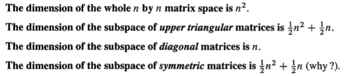

Abstract: 本文是本章最重要的知识点，也是整个线性代数中非常核心的内容，包括independence ，basis和dimension等多个概念
Keywords: Independence，Basis，Dimension，Span
独立性，基和维度
在没有系统学习线性代数之前，对很多里面的名词有所畏惧，现在思考发现，很多听不懂的名词都是因为不明白背后的原理和知识才会产生畏惧，也有可能这个名词背后真的蕴藏的一个非常深奥的系统知识，但是如果我们慢慢的从头开始抽丝剥茧的把每一个知识点都掌握了，最后听到这个名词就会觉得这是个很平常的词汇而已，但是没有学习之前就会一头雾水，还有一个感觉就是，如果这些基础知识不掌握，论文种可能是个很简单的过程，作者略过了，如果基础不牢就会迷惑，或者自己瞎猜，其实迷惑不可怕，起码自己知道这里有问题，但是瞎猜就有问题了，而且还猜的理直气壮，觉得自己猜的都对，这种人是永远不会进步的。
今天我们就逐个解释线性代数中比较常出现的几个非常重要的概念。
线性独立
Linear Independence可以拆开看，Linear就是我们的基础关系，线性，满足线性组合的基本要求1-1:Linear Combinations有详细说明，就是满足add 和scalar的组合；Independence表示独立，谁和谁也不相关，其实不相关的这个概念在概率论中让我记忆深刻的，而且一直也不懂到底是啥意思（现在也不懂），不相关就是没办法关联起来。
现在抛弃上面的所有思路，从矩阵角度来看，矩阵角度也就是向量角度，因为Linear Independence是针对向量矩阵是向量合起来写的一种方式：
Definition: The columns of A are linearly independent when the only solution to $Ax=0$ is $x=0$ No other combination $Ax$ of the columns gives the zero vector
定义是说，当向量汇聚成矩阵后，矩阵的nullspace只有0向量的时候，这些向量线性独立，nullspace只有0，说明elimination后的rank=column number。这样nullspace就只有0了。
另一个定义：
Definition: The sequence of vectors $v_1,\dots,v_n$ is linearly Independence if the only combination that gives the zero vector is $0v_1+0v_2+ \dots +0v_n$
$x_1v_1+x_2v_2+\dots+x_nv_n=0$ only happens when all x’s are zero
只有当x全是0的时候，组合向量v才能得到0，其他x不能完成这个任务，就说这些v线性独立。
注意，只有向量有线性独立的说法，一个矩阵不能线性独立，当然entry是矩阵的向量也可以线性独立，那就有点复杂了，不过也是一样的道理，满足条件就可以。
如果向量sequence中包含0向量，那么这个他们不会Linear Independence。
上面提到了rank和矩阵大小的关系对是否线性相关有影响，当$r=n\leq m$时，线性独立，但是当$r\leq m < n$时，必然线性相关。
在另一本书上《Linear algebra done right》上说当一个向量sequence里其中一个可以被其他线性组合出来，那么他们线性相关，否则线性无关，这个和上面的nullspace的说法含以上是一致的，但是感觉更形象。
向量张成子空间（Row Space）
本来想写span但是总记得已经写过了，回去一查果然有说明，span的概念比较好理解，就是若干个向量通过线性组合得到的一个向量空间（满足向量空间的所有要求），具体的说明可以复习下：Span.列向量是矩阵中所有的列span成的空间。
举个🌰 ：
$$
v_1=\begin{bmatrix}1\\0\end{bmatrix}\\
v_2=\begin{bmatrix}0\\1\end{bmatrix}
$$
这两个向量可以线性组合出二维实数空间的所有向量，也就是说$v_1$和$v_2$ span $\Re^2$
前面我们介绍过列空间，矩阵列span出来的空间，对应的，矩阵每行span出来的空间叫做row space，矩阵A的row space与$A^T$的column space相同。
$$
A=\begin{bmatrix}
1&4\\
2&7\\
3&5
\end{bmatrix}\\
$$
这个矩阵的列空间：
$$
C(A)=
x_1
\begin{bmatrix}
1\\
2\\
3
\end{bmatrix}+
x_2
\begin{bmatrix}
4\\
7\\
5
\end{bmatrix}
$$
行空间：
$$
C(A^T)=
x_1
\begin{bmatrix}1\\4\end{bmatrix}+x_2
\begin{bmatrix}2\\7\end{bmatrix}+x_3
\begin{bmatrix}3\\5\end{bmatrix}
$$
同样的矩阵，同样的数字，组合出来的空间却完全不同，列向量在 $\Re^m$中，行向量在 $\Re^n$
基(Basis)
好的理解了span的概念我们对basis的概念就理解了一般，如果我们有五个向量可以span出来一个空间S，那么我们的一种想法是不是能不能用这五个向量中的其中几个span出等价的空间，答案是有可能的，其根本原因是线性组合的计算性质，如果五个向量中的一个可以用其他四个组合出来，就可以省去这个被组合出来的向量，这句话熟悉么？没错上面提到的线性独立和线性相关的概念。
Definition: A basis for a vector space is a sequence of vectors with two properties: The basis vectors are linearty independent and they span the space
如果你有一组向量，他们span了一个space，如果你想得到这个space的基，那么就找出这组向量中线性独立的部分，把dependent的向量去掉。
Linear combination的性质是所有线性代数知识的合法性来源。
根据线性组合的性质可以继续发掘出很多关于basis的性质。
There is one and only one way to write v as a combination of the basis vectors
对于已经确定的一组基向量，这个空间中的所有向量只有一种方式通过基向量线性组合而的
The columns of the n by n identity Matrix give the “Standard basis” for $\Re^n$
这个是说标准基的来源，单位矩阵的每一列就是standard basis。
The vectors $v_1,\dots v_n$ are basis for $\Re^n$ exactly when they are the columns of an n by n invertible matrix. Thus $\Re^n$ has infinitely many different bases
一组基组合在一起形成方阵，那么这个矩阵的rank=n=m，那么这个矩阵可逆，并且span出$\Re^n$。这个结论反推可以得到一个space可以有infinity个基
The pivot columns of A are a basis for its column space.The pivot rows of A are a basis for its row space . So are the pivot rows of its echelon form R.
消元后的主行和主列有一个特点，就是他不能被其他行和列线性组合出来，也就是在这个行和列中挑选出来的线性独立的行和列就是主行和主列，那么一个矩阵的行空间或列空间的基就是主行和主列。
那么如果我们有5个向量，每个向量属于 $\Re^7$，那么我们怎么确定这些向量span的空间的基呢？
两种方法，把这些向量作为行组合成矩阵，或者把这些矩阵作为列组合成矩阵，然后消元，对应的主行和主列就是基。
If $v_1,\dots,v_m$ and $w_1,\dots,w_n$ are both basis for the same vector space ,then m=n.
对于一个确定的vector space其不同的基，具有相同的向量数量。
维度
If $v_1,\dots,v_m$ and $w_1,\dots,w_n$ are both basis for the same vector space ,then m=n.
这个性质可以直接到出dimension的定义，m或者n这个实数就是dimension。
Definition: The dimension of a space is the number of vectors in every basis.
一个空间的dimension，是其一组基向量内向量的个数。
对于一个矩阵，他的column space的基是主列，主列的个数和pivot的个数相同，pivot的个数就是rank，哈哈，没错一个矩阵的列空间的dimension是rank，没错吧，所有知识点都是相互勾连在一起的，而这些相互关系的最终基础就是linear combination。
矩阵空间和函数空间(Matrix Space and Function Space0
前面说过矩阵和函数可以是向量的组成元素，那么矩阵向量的基和函数向量的基与上面实数向量的定义和性质完全一致：

Conclusion
这几篇写的都很长，感觉写的力不从心，一边参考教材一边写，没办法把书扔掉直接码字，还是要继续努力，后面还要做些练习，非常感谢MIT做出的无私奉献，把所有课程相关的内容开放下载，大家继续加油。